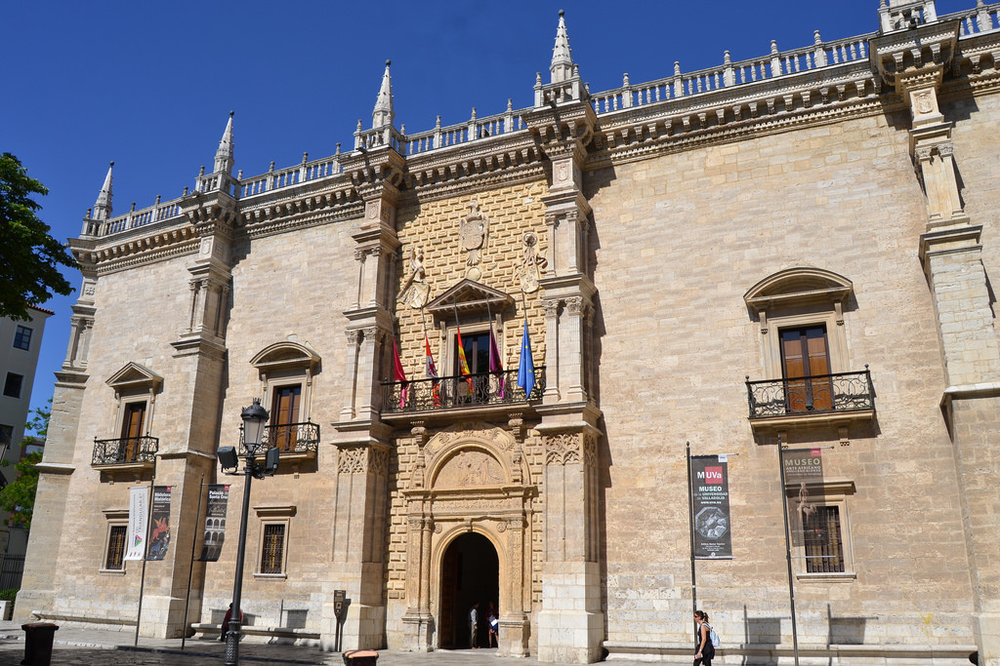

| Tabla de contenidos |
|---|
|
1. Etapa 1: Toledo 2. Etapa 2: Segovia 3. Etapa 3: Ávila 4. Etapa 4: Guadalajara 5. Etapa 5: Madrid 6. Etapa 6: Cuenca 7. Etapa 7: Salamanca 8. Etapa 8: Sevilla 9. Etapa 9: Cádiz 10. Etapa 10: Málaga 11. Etapa 11: Burgos 12. Etapa 12: Valladolid |
| Etapa 1: Toledo | |||||
|---|---|---|---|---|---|
| Provincia: Toledo | Superficie: 15.369 km2 | Población: 699.136 (45 hab./km2) | | ||
| Municipio(s) visitado(s): Toledo | |||||
| Distancia recorrida: 70 km | Fecha: 17 de mayo de 2016 | Duración: 1 día | |||
| Arquitectura civil: Alcázar de Toledo, Castillo de San Severiano, Estación de tren de Toledo | |||||
| Arquitectura religiosa: Catedral de Toledo, Sinagoga de Toledo | |||||
| Museos: Museo de El Greco, Museo de Santa Cruz | |||||
| Naturaleza: Río Tajo | |||||
| Otros: Academia de Infantería, Plaza Zocodover, Puente de Alcántara | |||||
La provincia de Toledo se encuentra en Castilla-La Mancha, limitando la Comunidad de Madrid por el Sur con ella. Es un destino muy habitual entre los madrileños para hacer una excursión de un día o fin de semana dada su proximidad a Madrid. En tren (AVANT) se tarda unos 33 minutos en llegar desde Atocha y tiene un coste de unos 10 euros (20 euros con ida-vuelta).
Al llegar al destino, lo primero que llama la atención es la propia estación de tren de Toledo, con estilo mudéjar. Saliendo de ésta hacia la derecha y andando por una avenida durante unos 10 minutos, enseguida te topas con el río Tajo (el más largo de la Península y que desemboca en el Atlántico en Portugal), el cuál se cruza por un puente moderno desde el que se ve otro con más historia, el puente de Alcántara. Desde esta zona ya es posible divisar el Castillo de San Severiano y el Alcázar de Toledo en la zona alta de la ciudad.
Siguiendo hacia el centro, ayudándome de las indicaciones y letreros, ya empiezan a verse algunos edificios antiguos, murallas con torreones y puertas. No sabría decir cómo llegué hasta el Alcázar y la Catedral pues lo que hice fue callejear, casi siempre cuesta arriba por infinidad de calles, muchas de estilo medieval. Si sigues las cuestas hacia arriba casi con toda seguridad termines en la Plaza Zocodover y de ahí el Alcazar está a un paso. En dicha plaza compré unas postales con lo más característico de la ciudad.
El recorrido cansa, por lo que se recomienda llevar bastante agua y hacer descansos de vez en cuando en sus variados parques y jardínes. En uno de ellos, próximo al Alcazar, es posible divisar varios kilómetros del río Tajo.
Otros lugares que visité fueron el Museo de Santa Cruz, con variadas pinturas, tapices, esculturas y otros objetos como armas, libros antiguos y monedas. Entre las pinturas destacan varias del taller de El Greco.
También vi desde fuera o lejos el edificio de la Academia de Infantería, la Catedral, el Museo de El Greco y una sinagoga en el que fuera barrio judío. Junto a la catedral hay una oficina de turismo en la que entré a pedir un mapa y me dieron algunas indicaciones.
A la vuelta hacia la estación de tren no hice el trayecto inverso, sino que bajando por las cuestas (creyendo que me llevaría por el mismo lugar que vine, es fácil perderse) llegué a un camino que bordea el Tajo. Decidí entonces simplemente seguir esta ruta hacia el puente de Alcántara que se veía a lo lejos y después de unos 20 minutos llegué a la avenida que conecta con la estación de tren.
| Etapa 2: Segovia | |||||
|---|---|---|---|---|---|
| Provincia: Segovia | Superficie: 6.920 km2 | Población: 161.702 (23 hab./km2) |  | ||
| Municipio(s) visitado(s): Segovia | |||||
| Distancia recorrida: 90 km | Fecha: 24 de mayo de 2016 | Duración: 1 día | |||
| Arquitectura civil: Acueducto de Segovia, Alcázar de Segovia, Estación de Segovia-Guiomar, Murallas de Segovia | |||||
| Arquitectura religiosa: Catedral de Segovia | |||||
| Museos: Casa de Antonio Machado | |||||
| Naturaleza: Sierra de Peñalara | |||||
| Otros: Plaza de la Artillería, Plaza Mayor de Segovia, Túnel ferroviario de la Sierra de Guadarrama | |||||
La provincia de Segovia se encuentra en Castilla y León, al noroeste de Madrid. Es otro destino próximo a la capital de España y al que se puede llegar en tren también en una media hora (10 euros ida, 20 euros ida-vuelta). Me sorprendió mucho que los últimos 10-15 minutos del trayecto se hacen dentro de un túnel larguísimo y completamente oscuro, por lo que solo se puede disfrutar de las vistas desde el tren en la primera parte del viaje. (Nota: Días después buscando información sobre este tema, descubrí que se trata del Túnel ferroviario que atraviesa la Sierra de Guadarrama, es el más largo de España)
En mi caso llegué a la estación de Segovia-Guiomar, ya que el tren era de alta velocidad. Esta estación se encuentra en las afueras de Segovia por lo que hay que tomar un autobus local (2 euros) que te espera justo al salir de la estación y que te deja en la Plaza de la Artillería, junto al acueducto, tras un trayecto de unos 15-20 minutos.
Tengo que reconocer que el acueducto no me sorprendió tanto como esperaba. No sé si fue por tratarse de una construcción repetitiva (arcos y más arcos) y con poco ornamento o detalles en los que fijarse. En cualquier caso, es una gran obra de ingeniería romana, seguramente la más importante en España de las que se conservan, y Patrimonio de la Humanidad. Existen unas escaleras que permiten acceder a una zona alta próxima al acueducto, desde la que se puede ver la obra con otra perspectiva, además de la sierra (Peñalara) y el resto de la ciudad. Pasé allí bastante rato contemplando las vistas.
Tras ver durante un rato el acueducto me dispuse a callejear y he de reconocer que me gustaron mucho sus calles, más que en el caso de Toledo (¿quizás porque no hay tantas cuestas?). Segovia está llena de miradores y si caminas durante unos minutos seguro que llegarás a alguno de ellos, desde los que se puede ver tanto las murallas de la ciudad como la naturaleza que rodea a la misma.
Otros monumentos que pude ver fueron el Alcázar de Segovia, la Catedral, la Plaza Mayor, una estatua de Antonio Machado y la casa donde vivió (aunque estaba cerrada a la hora en la que me pasé, al almuerzo). Allí me encontré con una mujer uruguaya, profesora de literatura, que estaba recorriendo España y especialmente interesada en visitar la Casa de Machado, además de la de Lope de Vega (en Madrid) y la de Cervantes (en Alcalá de Henares). No pudo entrar pues como digo estaba cerrada. Estuvimos hablando durante un buen rato y luego nos despedimos. Después me di cuenta de que no nos habíamos dicho nuestros nombres y que quizás en el futuro, si converso con otros viajeros, podría intercambiar correos o algo para mantener el contacto.
Compré unas postales como suelo hacer, en este caso en unas tiendas de recuerdos próximas a la catedral. Ya por la tarde regresé a la zona del acueducto para volver a verlo y un rato después tomé el autobus de regreso a la estación de Guiomar.
| Etapa 3: Ávila | |||||
|---|---|---|---|---|---|
| Provincia: Ávila | Superficie: 8.048 km2 | Población: 167.015 (20 hab./km2) |  | ||
| Municipio(s) visitado(s): Ávila | |||||
| Distancia recorrida: 110 km | Fecha: 1 de junio de 2016 | Duración: 1 día | |||
| Arquitectura civil: Murallas de Ávila | |||||
| Arquitectura religiosa: Basílica de San Vicente, Catedral de Ávila, Los 4 Postes | |||||
| Museos: Archivo General Militar de Ávila | |||||
| Naturaleza: Río Adaja | |||||
| Otros: Arco del Mariscal, Plaza del Mercado chico | |||||
La provincia de Ávila, limítrofe con la de Madrid (al igual que Toledo y Segovia), se encuentra en Castilla y León. Ávila es una ciudad cuyo centro histórico se encuentra dentro de un recinto amurallado de unos 3 km. Llegué a Ávila tras 1 hora y 30 minutos de trayecto aproximadamente, abordo de un tren media-distancia. Se trataba de un tren con destino Salamanca y que hacía parada en Ávila, entre otras, como El Escorial.
Durante el trayecto destacan los paisajes montañosos que en esta época del año ya son completamente verdes, con algunas vacas y otras reses. Logré ver el Monasterio de El Escorial desde la ventana del tren aunque con tamaño minúsculo ya que queda bastante lejos, así como la cruz de El Valle de los Caídos. Por aquella zona, durante varios kilómetros de vía y junto a esta, se podían observar muchísimas flores de color rojo (amapolas), amarillo (¿margaritas?) y violetas, curiosamente los colores de la bandera de la II República.
Me bajé en mi parada, Ávila, y el tren siguió su destino hacia Salamanca. Saliendo de la estación continué todo recto hasta que encontré los primeros indicativos turísticos. Tras unos 10 minutos andando, llegué a las inmediaciones de la muralla y la Basílica de San Vicente. Tomé algunas fotos y me dirigí a la oficina de turismo, de varias plantas, donde había algunas maquetas de la muralla y otros carteles informativos.
Al salir de la oficina, caminé unos metros y enseguida dí con una de las múltiples puertas y arcos de la muralla, en este caso el Arco del Mariscal. Es una zona alta desde la que se ven los campos que rodean Ávila. Le pedí a unas chicas que también se veía que hacían turismo que me sacaran una foto usando como fondo la muralla.
A continuación crucé la muralla por dicho arco y me dediqué a callejear sin un rumbo concreto, llegando a la Plaza del Mercado chico, donde se encuentra el Ayuntamiento. Seguí andando, pasando por delante del Archivo General Militar de Ávila y algún edificio religioso. Vi los indicativos para llegar a Los 4 Postes, un punto elevado a las afueras desde la que se ve las murallas al completo, por lo que seguí dicho rumbo para tomar algunas fotografías. Pronto llegué a los límites de la muralla y a otra de sus puertas, cruzándola esta vez hacia afuera.
En días anteriores había explorado en Google Maps cómo llegar a Los 4 Postes, situado en un lateral de la carretera que lleva a Salamanca, pero sobre el terreno a veces las cosas no son tan evidentes. En las inmediaciones estaba el río Adaja, que hay que cruzar ya que Los 4 Postes están en la otra margen. Tan solo veía un puente para coches sin acera, que no me atrevía a cruzar. Supuse que debía haber otro modo de llegar allí así que merodeé un poco por la zona, sin éxito. Entonces vi a un hombre con mochila y pelo largo y blanco, al que saludé, ya que parecía buscar también algo. Se trataba de un peregrino que me comentó que estaba haciendo el Camino de Santiago al revés, partiendo de Santiago para llegar a la zona de Levante, concretamente Alicante. Le pregunté si sabía cómo llegar a Los 4 Postes y me dijo que él venía de allí justamente. Me explicó que había un puente peatonal camuflado detrás de unos arbustos, de ahí que no lo viera. Tras charlar un par de minutos más, me despedí y crucé ya hacia el otro lado, llegando enseguida a Los 4 Postes, desde donde tomé algunas fotografías panorámicas de Ávila.
Ya era la hora de comer así que me quedé en las proximidades del río Adaja, donde encontré un merendero con algunas mesas y bancos de piedra completamente vacío y allí me senté a comer a la sombra, pues el sol apretaba bastante. Después tomé algunas fotos del río y me puse de nuevo en marcha para seguir recorriendo la muralla por la parte externa. Llegué a otra de sus puertas y accedí al interior nuevamente, llegando a la Plaza de la Santa. Seguí andando hasta llegar a la Catedral que solo vi por fuera y compré unas postales en una tienda cercana.
Callejeé un poco más y luego ya puse rumbo de vuelta hacia la estación.
(Nota posterior: A partir del encuentro con ese peregrino, comencé a indagar acerca del Camino de Santiago. Quién sabe si en el futuro me atreveré a hacer algún tramo o etapas de los múltiples caminos que hay.)
| Etapa 4: Guadalajara | |||||
|---|---|---|---|---|---|
| Provincia: Guadalajara | Superficie: 12.167 km2 | Población: 259.537 (21 hab./km2) |  | ||
| Municipio(s) visitado(s): Guadalajara | |||||
| Distancia recorrida: 60 km | Fecha: 17 de junio de 2016 | Duración: 1 día | |||
| Arquitectura civil: | |||||
| Arquitectura religiosa: | |||||
| Museos: | |||||
| Naturaleza: | |||||
| Otros: | |||||
La provincia de Guadalajara es la penúltima provincia limítrofe con la de Madrid que me quedaba por visitar (ahora la que me queda es Cuenca). Se encuentra en Castilla-La Mancha y ha sido con diferencia la menos turística de las hasta ahora visitadas. Aun así hay algunas cosillas que destacar y que resumo a continuación.
Los lugares más emblemáticos de la ciudad son el Palacio del Infantado que es también la sede del Museo de Guadalajara (muy bonito, sobre todo las pinturas en las paredes interiores) y del Archivo Provincial, el Alcázar (que se encuentra en una situación de conservación lamentable y está cerrado al público), dos torreones (el llamado Torreón del Alamín y el de Alvar Fáñez), varios edificios religiosos entre ellos la Concatedral de Santa María, un modesto zoológico local, algunos parques y un antiguo puente de piedra que cruza el río Henares a su paso por el municipio.
Tras bajar del tren me dispuse a caminar hasta llegar al centro de la ciudad. Hay un buen tramo (en el que entre otras calles pasé por el Paseo de la Estación y la Calle Madrid) como de unos 20 minutos en el que lo más llamativo del camino es cruzar el Henares, pues lo demás son bloques de pisos. Al llegar a las inmediaciones del centro es visible una de las fachadas del alcázar que como comento está en muy mal estado y cerrado. Sino te fijas bien es posible que ni te des cuenta de que en su día fue un edificio histórico importante.
El Palacio del Infantado es un gran edificio de piedra construido en el siglo XV y del que sobresalen rombos dándole a la fachada un aspecto bastante llamativo. Dentro se encuentra el museo de la ciudad (¿o provincial?). Como acostumbran estos museos, hacen un recorrido desde los primeros asentamientos en la zona en la prehistoria, pasando por la época romana, Edad Media, las 3 religiones que convivieron en España, etc, hasta llegar a nuestros días. Lo que más me gustaron fueron las pinturas que decoran los techos de las grandes salas del museo.
De los dos torreones principales de la ciudad, accedí al Torreón del Alamín. En su interior hay algunas maquetas y paneles explicativos de la evolución de las murallas de Guadalajara. El acceso a la parte superior de la torre estaba cerrado (no sé si por obras o de manera permanente), por lo que todo el recorrido era por el interior de la torre. Interesante pero el no poder subir arriba a ver las vistas le quitó encanto.
La ciudad cuenta con un zooloógico que visité en poco tiempo pues ya estaba algo cansado. Que la primera especie del recorrido, unas nutrias, no se pudieran ver (no sé si estaban escondidas o ausentes), no ayudó demasiado. Las especies más abundantes eran las aves y mamíferos. A un pavo real logré fotografiarlo con la cola extendida y más tarde pude ver a un oso aunque estaba durmiendo. Al salir del zoológico y coger el camino de vuelta a la estación, volví a pasar sobre el río y tome algunas fotos y un pequeño vídeo.
Sorprendentemente no vi ninguna tienda de souvenirs, la primera vez que me ocurre. Estuve caminando por el centro y entorno a los principales monumentos y no me topé con ninguna, si había alguna escondida no lo sé. De modo que me quedé sin comprar postales.
| Etapa 5: Madrid | |||||
|---|---|---|---|---|---|
| Provincia: Madrid | Superficie: 8.021 km2 | Población: 6.436.996 (809 hab./km2) | |||
| Municipio(s) visitado(s): Alcalá de Henares, Aranjuez, Madrid | |||||
| Distancia recorrida: 0 km | Fecha: 2016 | Duración: | |||
| Arquitectura civil: | |||||
| Arquitectura religiosa: | |||||
| Museos: | |||||
| Naturaleza: | |||||
| Otros: | |||||
Dado que he estado unos meses viviendo en la Comunidad de Madrid, han sido varios los días salteados en los que he hecho turismo por la provincia. Esta es una etapa «especial» que resume algunos de los lugares visitados, sin más orden que el alfabético para los municipios y el cronológico cuando he repetido visita.
| Etapa 6: Cuenca | |||||
|---|---|---|---|---|---|
| Provincia: Cuenca | Superficie: 17.141 km2 | Población: 203.841 (11 hab./km2) |  | ||
| Municipio(s) visitado(s): Alcocer, Chillaron de Cuenca, Cuenca, Sacedón, Villar de Domingo García | |||||
| Distancia recorrida: | Fecha: | Duración: 1 día | |||
| Arquitectura civil: | |||||
| Arquitectura religiosa: | |||||
| Museos: | |||||
| Naturaleza: | |||||
| Otros: | |||||
| Etapa 7: Salamanca | |||||
|---|---|---|---|---|---|
| Provincia: Salamanca | Superficie: km2 | Población: ( hab./km2) | |||
| Municipio(s) visitado(s): Salamanca | |||||
| Distancia recorrida: | Fecha: | Duración: 1 día | |||
| Arquitectura civil: | |||||
| Arquitectura religiosa: | |||||
| Museos: | |||||
| Naturaleza: | |||||
| Otros: | |||||
| Etapa 8: Sevilla | |||||
|---|---|---|---|---|---|
| Provincia: Sevilla | Superficie: km2 | Población: ( hab./km2) |  | ||
| Municipio(s) visitado(s): Santiponce | |||||
| Distancia recorrida: | Fecha: | Duración: 1 día | |||
| Arquitectura civil: | |||||
| Arquitectura religiosa: | |||||
| Museos: | |||||
| Naturaleza: | |||||
| Otros: | |||||
| Etapa 9: Cádiz | |||||
|---|---|---|---|---|---|
| Provincia: Cádiz | Superficie: km2 | Población: ( hab./km2) |  | ||
| Municipio(s) visitado(s): Arcos de la Frontera, Benalup-Casas Viejas, Medina-Sidonia, Vejer de la Frontera | |||||
| Distancia recorrida: | Fecha: | Duración: 4 días (1 día por municipio) | |||
| Arquitectura civil: | |||||
| Arquitectura religiosa: | |||||
| Museos: | |||||
| Naturaleza: | |||||
| Otros: | |||||
| Etapa 10: Málaga | |||||
|---|---|---|---|---|---|
| Provincia: Málaga | Superficie: km2 | Población: ( hab./km2) | |||
| Municipio(s) visitado(s): Estepona | |||||
| Distancia recorrida: | Fecha: | Duración: 1 día | |||
| Arquitectura civil: | |||||
| Arquitectura religiosa: | |||||
| Museos: | |||||
| Naturaleza: | |||||
| Otros: | |||||
| Etapa 11: Burgos | |||||
|---|---|---|---|---|---|
| Provincia: Burgos | Superficie: km2 | Población: ( hab./km2) |  | ||
| Municipio(s) visitado(s): Burgos | |||||
| Distancia recorrida: | Fecha: | Duración: 1 día | |||
| Arquitectura civil: | |||||
| Arquitectura religiosa: | |||||
| Museos: | |||||
| Naturaleza: | |||||
| Otros: | |||||
| Etapa 12: Valladolid | |||||
|---|---|---|---|---|---|
| Provincia: Valladolid | Superficie: km2 | Población: ( hab./km2) |  | ||
| Municipio(s) visitado(s): Valladolid | |||||
| Distancia recorrida: | Fecha: | Duración: 1 día | |||
| Arquitectura civil: | |||||
| Arquitectura religiosa: | |||||
| Museos: | |||||
| Naturaleza: | |||||
| Otros: | |||||
La provincia de Valladolid se encuentra en la comunidad autónoma de Castilla y León, separada de la provincia de Madrid por la de Segovia.
Tras un trayecto de alrededor de 1 hora desde Madrid-Chamartín, pasando por el túnel ferroviario de la Sierra de Guadarrama con parada en Segovia-Guiomar, se llega a la Estación de Valladolid-Campo grande. Muy próxima a la estación se encuentra una gran zona ajardinada llamada Campo grande en la que también está una de las Oficinas de Turismo. Debo decir que el trato en la oficina fue excelente, había varias mesas informativas y te daban todo tipo de detalles, mucho material y buen personal, es con diferencia la mejor oficina que me he encontrado hasta ahora.
Con el mapa en la mano y los puntos más importantes señalados en él, me dispuse a recorrerlo. La primera parada consistió en una breve visita a los jardines de Campo grande, la estatua de Zorrilla y el monumento a Colón, aunque sin entretenerme demasiado.
Tras recorrer la calle Santiago, llegué a la Plaza Mayor de Valladolid, en la que como de costumbre estaban montando un escenario para algún evento que impide que puedas ver la plaza en toda su plenitud. Tras hacer algunas fotos, el siguiente destino era el Museo de Valladolid, del que principalmente estaba interesado en las salas de Bellas Artes, pues las de prehistoria e historia antigua "siempre son lo mismo" en mi opinión (piedras talladas, puntas de flecha, vasijas, algún colmillo de mastodonte, monedas romanas, etc). La mayoría de los cuadros en la sección de Bellas Artes eran de caracter religioso y también había algunos mosaicos grandes, pero bastante deteriorados. Para ser Valladolid una ciudad importante, me pareció algo escaso el museo. Compré algunas postales a 0,10 € a la salida no obstante (el precio más barato al que las he encontrado, he de decirlo). Por cierto, el museo estaba completamente vacío.
Al salir del museo y mientras me dirigía al siguiente, el Museo Nacional de Escultura, me encontré con algo inesperado, una exposición de los 40 años de Comisiones Obreras en el Archivo General de Castilla y León. A pesar de conocer la escasa combatividad de este y el otro sindicato mayoritario (UGT), tenía mucho interés en entrar y me hizo ilusión, pues es difícil encontrar en España actividades, exposiciones y no digamos ya algún "museo" que trate el tema del movimiento obrero y las luchas sociales.
La exposición hacía un repaso desde los orígenes del sindicato (incluso se remontaba a cuando todavía no existía como tal, pues no fue legalizado hasta la Transición), tratando la época del franquismo, la infiltración en el sindicato vertical, etc. Con abundantes paneles, fotografías, descripciones, carteles de huelgas, publicaciones (como un ejemplar de Mundo Obrero de 1933), algún objeto de valor histórico (como una multicopista manual "Vietnamita" usada en la clandestinidad), hacían la exposición muy entretenida y a la vez instructiva. La figura de Marcelino Camacho estaba bastante presente, como era de esperar.
En la Oficina de Turismo me advirtieron que había una iglesia que mucha gente confundía con el Museo Nacional de Escultura y efectivamente a mí me pasó lo mismo. Siguiendo los letreros que indicaban la dirección al museo, llegué a una plaza con un gran edificio con una fachada muy barroca y llena de esculturas. Cuando fui a entrar me di cuenta que trataba de una iglesia y no del museo. Rodee la iglesia y entonces vi un gran cartel rojo "Museo Nacional de Escultura", la entrada pues estaba algo escondida. Se acercaba la hora de almorzar y el museo cerraba a las 14:00, así que no pude visitar todas las salas. Aunque la entrada era válida para todo el día y en un principio pensé en regresar a las 16:00 cuando abrieran de nuevo, finalmente no lo hice.
Después de salir del museo, comer algo y descansar un rato, seguí las indicaciones del mapa para llegar a la zona de la catedral, cuya torre del reloj es imponente. Junto a ella y a una plaza con un monumento a Miguel de Cervantes se encuentra la Universidad de Valladolid y su famosa fachada.
Finalmente me dirigi a uno de los lugares más curiosos y singulares de Valladolid, el Museo de Arte Africano. Compuesto de tres grandes colecciones de esculturas (la mayoría en terracota) e indumentaria procedentes de multitud de países de África, es una excelente oportunidad para ver "otro tipo de arte" y tomar perspectiva respecto al arte europeo u occidental.
Tras esto, no me quedaban fuerzas para mucho más. He de reconocer que no vi el Pisuerga, "aprovechando que pasa por Valladolid...". Eso será la próxima vez que vuelva por allí.
 |
Esta página fue modificada por última vez el 2017-05-24 13:13:05 (UTC) | Con la tecnología de GitHub pages |
{kind=link}
{kind=link}
{kind=link}
{kind=link}